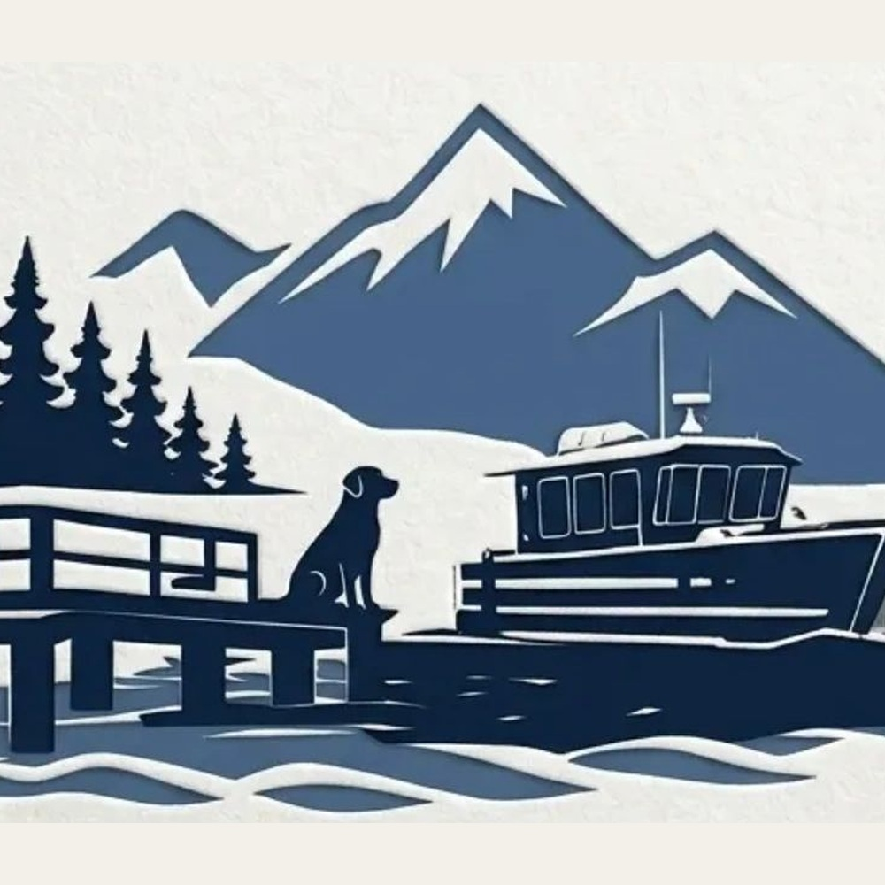
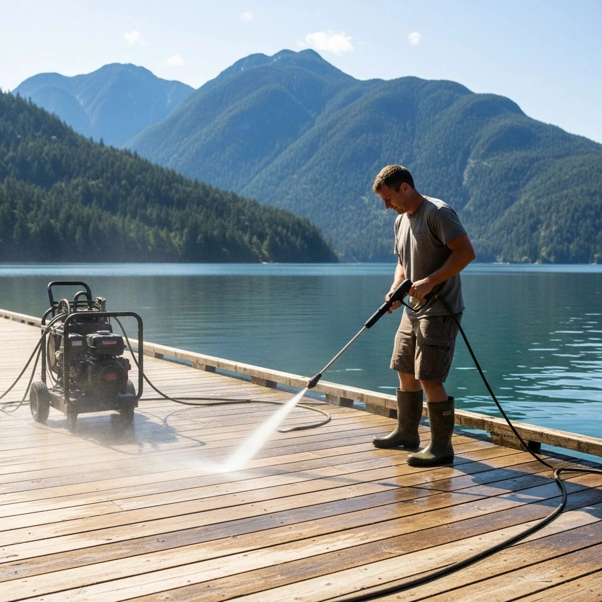

01
Docks, floats, ramps, and refits
New builds and repairs for waterfront properties, yacht clubs, and marinas. Work is planned around local conditions, access, and the details that keep the dock useful over time.

Mowatt Marine & Associates 778 996 2453Deep Cove and nearby waters
From dock repairs and moorings to new floats and annual upkeep, Mowatt Marine helps waterfront owners understand the site, the access, and the next practical step.
What we help with
Every shoreline is a little different. We look at exposure, access, existing structure, and timing before recommending who should come, what to bring, and what needs to be done.
New builds and repairs for waterfront properties, yacht clubs, and marinas. Work is planned around local conditions, access, and the details that keep the dock useful over time.

A fast first look and practical response when a ramp, float, piling, or mooring problem is putting people, boats, or property at risk.

Anchoring and mooring work for floating assets exposed to changing depths, wind, weather, and boat wakes around local waters.

Annual checks, cleaning plans, and maintenance for docks and marine structures that need steady care, not last-minute surprises.
How the work starts
Some jobs need a small repair crew. Some need diving, fabrication, planning, or engineering input. Mowatt Marine stays the point of contact and keeps the work tied back to what the site actually needs.
Shoreline, access, condition, and urgency.
What should happen first, who is needed, and what it will likely take.
Crew and equipment matched to the site.
Follow-up and maintenance before small problems become big ones.

Nearby waters
A dock that works in one bay may not work the same way around the corner. Mowatt Marine focuses on nearby waters where access, weather, wakes, and tide are part of the plan.
Start the conversation
A few practical details are enough to get started: what changed, where it is, how urgent it feels, and what access looks like.